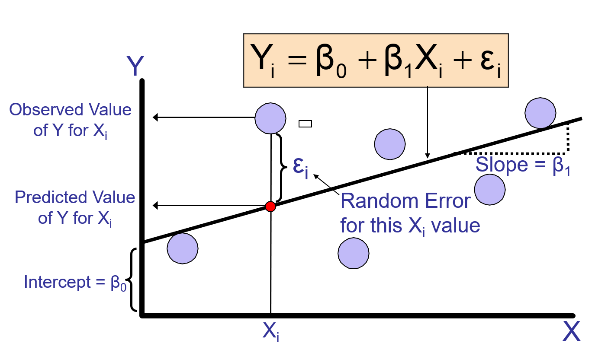
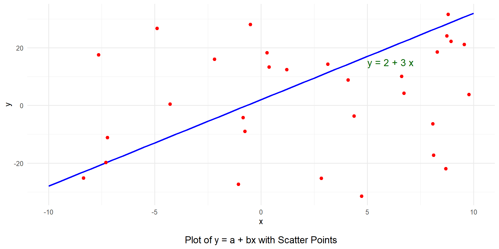
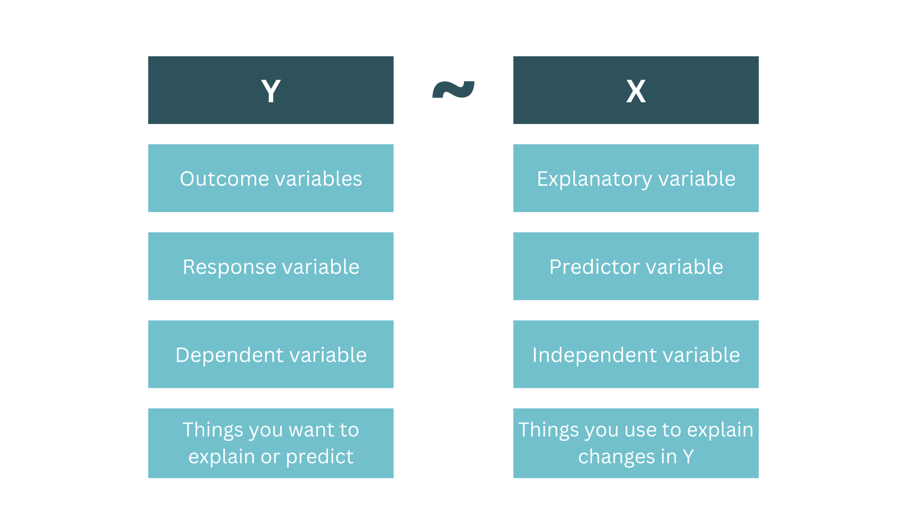

.
Introduction to simple linear regression
What is regression?
- Regression analysis is used to:
- Predict the value of a dependent variable based on the value of at least one independent variable.
- Explain the impact of changes in an independent variable on the dependent variable
Simple linear regression
Regression equation
\[ Y_i = \beta_0 + \beta_iX_i + \epsilon_i \]

Simple linear regression
Regression equation
\[ Y_i = \beta_0 + \beta_iX_i + \epsilon_i \]

Simple linear regression
Regression equation
\[ Y_i = \beta_0 + \beta_iX_i + \epsilon_i \]

Simple linear regression
Regression equation
\[ Y_i = \beta_0 + \beta_iX_i + \epsilon_i \]
- \(\beta_i\)
- regression coefficient for the predictor
- gradient or slope of the regression line
- direction/strength of the relationship
- \(\beta_0\)
- intercept
- point at which the regression line crosses the Y-axis
- \(\beta_i\)
Deriving the Ordinary Least Squares (OLS) estimators
In order to estimate the regression model one needs data
A random sample of \(n\) observations
- \((x_1, y_1)\) ← first observation
- \((x_2, y_2)\) ← second observation
- \((x_3, y_3)\) ← third observation
- …
- \((x_n, y_n)\) ← nth observation
Deriving the Ordinary Least Squares (OLS) estimators
- Defining regression residuals
- \(\hat{u_i} = y_i - \hat{y_i} = y_i - (\hat{\beta_0} + \hat{\beta_1}x_i)\)
- Minimize the sum of squared residuals (SSR)
- \(\text{min} \Sigma_{i=1}^n \hat{u_i}^2\) → \(\hat{\beta_0}, \hat{\beta_1}\)
- OLS estimator
- \(\hat{\beta_1} = \frac{Cov(X,Y)}{Var(X)} = \frac{\Sigma_{i=1}^n (x_i - \bar{x})(y_i - \bar{y})}{\Sigma_{i=1}^n (x_i - \bar{x})^2}\)
- \(\hat{\beta_0} = \bar{y} - \hat{\beta_1}\bar{x}\)
Simple linear regression model

Simple regression model
- Wage and education
- \(wage = \beta_0 + \beta_1 educ + u\)
- fitted regression
- \(\hat{wage} = -0.90 + 0.54 educ\)
- Interpretation: in the sample, one more year of education was associated with an increase in hourly wage by $0.54.
Simple linear regression
Example in R
A distributor of frozen desert pies wants to evaluate the effect of price to the demand of pie. Data are collected for 15 weeks.
Simple linear regression
Simple linear regression
Step 2: Estimate the model
## estimating linear regression
model <- lm(Pie_Sales ~ Price, data = df)
## printing model summary
summary(model)
Call:
lm(formula = Pie_Sales ~ Price, data = df)
Residuals:
Min 1Q Median 3Q Max
-90.040 -45.040 1.977 55.926 81.977
Coefficients:
Estimate Std. Error t value Pr(>|t|)
(Intercept) 558.28 90.44 6.173 3.36e-05 ***
Price -24.03 13.48 -1.783 0.0979 .
---
Signif. codes: 0 '***' 0.001 '**' 0.01 '*' 0.05 '.' 0.1 ' ' 1
Residual standard error: 59.09 on 13 degrees of freedom
Multiple R-squared: 0.1965, Adjusted R-squared: 0.1347
F-statistic: 3.179 on 1 and 13 DF, p-value: 0.09794Step 3: Interpret results
y-intercept (a): 558.28
- estimated average value of \(y\) when all \(x_i = 0\)
slope (b): -24.03
estimates the average value of y changes by \(b_i\) units for each 1 unit increase in \(x_i\) holding other variables constant.
example: a 1 unit increase in price decreases the pie sales by 24.03 pies per week.
Multiple linear regression
a linear regression with one or more independent variable (explanatory variable), and one dependent variable (response variable).
multiple regression model
\[ y = \beta_0 + \beta_1 x_1 + \beta_2 x_2 + ... + b_k x_k \]
Multiple linear regression
Example in R
A distributor of frozen desert pies wants to evaluate the factors affecting the demand of pie. Data are collected for 15 weeks.
Multiple linear regression
Step 1: import dataset
## import synthetic data
df <- tibble(
Week = 1:15,
Pie_Sales = c(
350,
460,
350,
430,
350,
380,
430,
470,
450,
490,
340,
300,
440,
450,
300
),
Price = c(
5.50,
7.50,
8.00,
8.00,
6.80,
7.50,
4.50,
6.40,
7.00,
5.00,
7.20,
7.90,
5.90,
5.00,
7.00
),
Advertising = c(
3.3,
3.3,
3.0,
4.5,
3.0,
4.0,
3.0,
3.7,
3.5,
4.0,
3.5,
3.2,
4.0,
3.5,
2.7
)
)
## print dataset
head(df)
# A tibble: 6 × 4
Week Pie_Sales Price Advertising
<int> <dbl> <dbl> <dbl>
1 1 350 5.5 3.3
2 2 460 7.5 3.3
3 3 350 8 3
4 4 430 8 4.5
5 5 350 6.8 3
6 6 380 7.5 4 Step 2: Create a scatter plot
Multiple linear regression
Step 3: Estimate the model
## estimating linear regression
model <- lm(Pie_Sales ~ Price + Advertising, data = df)
## printing model summary
summary(model)
Call:
lm(formula = Pie_Sales ~ Price + Advertising, data = df)
Residuals:
Min 1Q Median 3Q Max
-63.795 -33.796 -9.088 17.175 96.155
Coefficients:
Estimate Std. Error t value Pr(>|t|)
(Intercept) 306.53 114.25 2.683 0.0199 *
Price -24.98 10.83 -2.306 0.0398 *
Advertising 74.13 25.97 2.855 0.0145 *
---
Signif. codes: 0 '***' 0.001 '**' 0.01 '*' 0.05 '.' 0.1 ' ' 1
Residual standard error: 47.46 on 12 degrees of freedom
Multiple R-squared: 0.5215, Adjusted R-squared: 0.4417
F-statistic: 6.539 on 2 and 12 DF, p-value: 0.01201Step 4: Interpret results
\(\beta_1\) (Price): -24.98
- pie sales will decrease, on average, by 24.98 pies per week for each 1 unit increase in selling price, net of the effects of changes due to advertising.
\(\beta_2\) (Advertising): 74.13
- sales will increase, on average, by 74.13 pies per week for each $1 increase in advertising, net of the effects of changes due to price.
Multiple linear regression
Is the model significant?
| Observations | 15 |
| Dependent variable | Pie_Sales |
| Type | OLS linear regression |
| F(2,12) | 6.54 |
| R² | 0.52 |
| Adj. R² | 0.44 |
| Est. | S.E. | t val. | p | |
|---|---|---|---|---|
| (Intercept) | 306.53 | 114.25 | 2.68 | 0.02 |
| Price | -24.98 | 10.83 | -2.31 | 0.04 |
| Advertising | 74.13 | 25.97 | 2.85 | 0.01 |
| Standard errors: OLS |
- F-test
- shows if there is a linear relationship between all of the x variables considered together and the y variable.
- tests the null hypothesis that all regression coefficients are equal to zero.
- \(H_0: \beta_1 = \beta_2 = 0\)
- \(H_a\): at least one \(\beta_i \neq 0\)
- p-value < 0.05 → reject \(H_0\) → at least one \(\beta_i \neq 0\)
Multiple coefficient of determination (R-squared)
| Observations | 15 |
| Dependent variable | Pie_Sales |
| Type | OLS linear regression |
| F(2,12) | 6.54 |
| R² | 0.52 |
| Adj. R² | 0.44 |
| Est. | S.E. | t val. | p | |
|---|---|---|---|---|
| (Intercept) | 306.53 | 114.25 | 2.68 | 0.02 |
| Price | -24.98 | 10.83 | -2.31 | 0.04 |
| Advertising | 74.13 | 25.97 | 2.85 | 0.01 |
| Standard errors: OLS |
- R-squared
- shows the proportion of variation in \(y\) explained by all \(x\) variables adjusted for the number of \(x\) variables used.
- where excessive use of unimportant independent variables
- reports the proportion of total variation of in \(y\) explained by all \(x\) variables taken together
- ranges from 0 to 1
\[ R^2 = \frac{\text{SSR}}{SST} = \frac{\text{Sum of squares regression}}{\text{Total sum of squares}} \]
Multiple coefficient of determination (R-squared)
| Observations | 15 |
| Dependent variable | Pie_Sales |
| Type | OLS linear regression |
| F(2,12) | 6.54 |
| R² | 0.52 |
| Adj. R² | 0.44 |
| Est. | S.E. | t val. | p | |
|---|---|---|---|---|
| (Intercept) | 306.53 | 114.25 | 2.68 | 0.02 |
| Price | -24.98 | 10.83 | -2.31 | 0.04 |
| Advertising | 74.13 | 25.97 | 2.85 | 0.01 |
| Standard errors: OLS |
- Adjusted R-squared
- adjusts the \(R^2\) for the number of \(x\) variables in the model
- \(R^2\) never decreases when new \(x\) variable is added to the model.
- This can be disadvantage when comparing models
\[ R^2_{adj} = 1 - (1 - R^2)(\frac{n-1}{n-k-1}) \]
Check-up quiz
What is the primary goal of linear regression analysis?
To determine the strength of the relationship between two categorical variables.
To predict the value of a dependent variable based on one or more independent variables
To compare the means of two or more groups.
To analyze the frequency of occurrences within categories.
In simple linear regression, what does the slope of the regression line represent?
The average value of the dependent variable.
The change in the dependent variable for a one-unit increase in the independent variable
The correlation between the two variables.
The predicted value of the dependent variable when the independent variable is zero.
How does multiple linear regression differ from simple linear regression?
Multiple linear regression uses only one independent variable.
Multiple linear regression uses two or more independent variables
Multiple linear regression analyzes categorical variables.
Multiple linear regression does not involve a dependent variable.
What is the coefficient of determination (R-squared) in the context of regression analysis?
A measure of the strength of the linear relationship between the variables
The probability of making a correct prediction.
The difference between the observed and predicted values.
he slope of the regression line.
Let’s practice
Limited Dependent (LIMDEP) Models
Regression equation
\[ Y_i = \beta_0 + \beta_iX_i + \epsilon_i \]
- \(Y_i\): limited dependent variable, censored or truncated variable
- \(X_i\): independent variable
Limited Dependent (LIMDEP) Models
Adoption of new technology
\[ adoption = f(price, income, education, age, farm size, ... ) \]
- adoption (1 = yes, 0 = no): limited dependent variable
- adoption = 1 if the farmer adopts the new technology, 0 otherwise
Logistic regression
Adoption of new technology
\[ ln(\frac{P_{adoption}}{1-P_{adoption}}) = f(price, income, education, age, farm size, ... ) \]
- \(P_{adoption}\): probability of adoption
- \(1-P_{adoption}\): probability of non-adoption
Logistic regression
Adoption of new technology
\[ ln(\frac{P_{adoption}}{1-P_{adoption}}) = \beta_0 + \beta_1 age + \beta_2 farm + \beta_3 educ + \epsilon \]
\[ ln(\frac{P_{adoption}}{1-P_{adoption}}) = 0.3021 - 0.0231 age + 0.3852 farm + 0.1784 educ + \epsilon \]
\(\beta_1 = -0.0231\): for each additional year of age, the log-odds of adoption decreases by 0.0231, holding other variables constant.
\(\beta_2 = 0.3852\): for each additional unit increase in farm size, the log-odds of adoption increases by 0.3852, holding other variables constant.
\(\beta_3 = 0.1784\): for each additional year of education, the log-odds of adoption increases by 0.1784, holding other variables constant.
Let’s practice
Data visualization and Analysis using R | October 14-16, 2026 | CBDEM-LED AVR